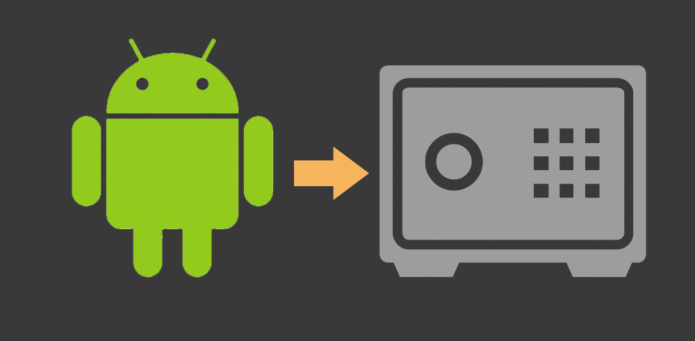
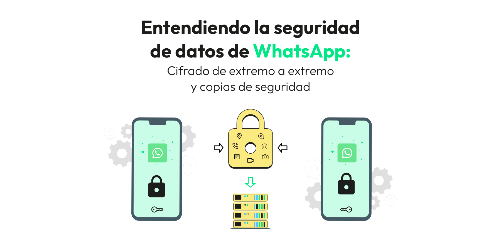

Cifrado en Android
El cifrado es una técnica esencial para proteger los datos almacenados en el dispositivo Android y evitar que sean accesibles en caso de que el dispositivo sea robado o perdido. Android utiliza diferentes tipos de cifrado:
- Cifrado de almacenamiento completo (FDE):Esta opción cifra todos los datos almacenados en el dispositivo. Desde Android 5.0 (Lollipop), Google habilita el cifrado por defecto en todos los dispositivos, lo que significa que toda la información almacenada en el dispositivo está cifrada y solo puede ser accedida por el usuario autorizado. 
- Cifrado de archivo individual:Además del cifrado de almacenamiento completo, Android también permite cifrar archivos individuales. Este tipo de cifrado es más específico y puede ser usado para cifrar ciertos archivos sensibles, como fotografías o documentos.
- Cifrado de comunicación:Para la protección de los datos en tránsito, Android utiliza HTTPS y otras tecnologías de cifrado (como TLS/SSL) en las aplicaciones que transmiten datos a través de redes. Esto protege la información del usuario de ser interceptada por atacantes mientras viaja por la red. 
El uso del cifrado asegura que, incluso si un atacante consigue acceso físico al dispositivo, los datos estarán protegidos y no podrán ser leídos sin la clave de descifrado.
Elaborado por Jordan Garcia